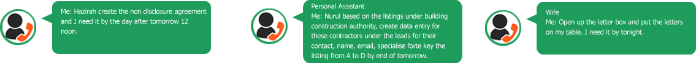

FoodMenu
Customer will arrive at the counter. With a screen of menu and also a mic. They can verbally speak to the mic for food ordering. And the mic will captured their voice and analysed.
TaskList
Upon receiving instructions from a boss, spouse, client the overview summary will be added accordingly to the tasklist according to the date on the calandar/gatt chart and options to set default of reminder alert can be activated and the person instructing will receive an update on their “Instruction”

Instructions
Updates to your INSTRUCTIONS on the different personnels as well as the deadline you have set to task will also reflect. Likewise the individuals or entities that was tasked will have notifications updated to their tasklist.
